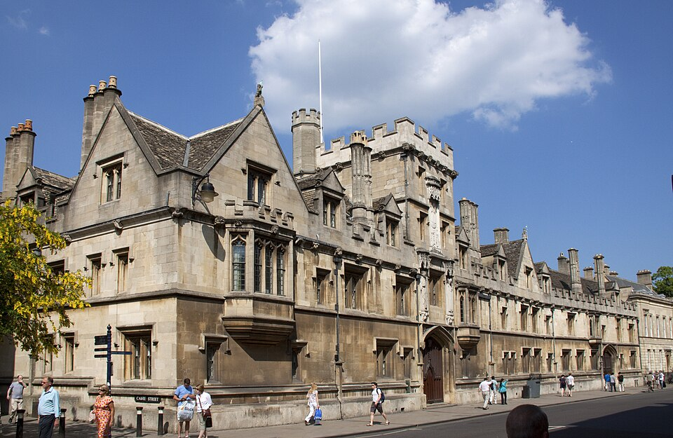

All Souls College
High Street, Oxford, OX1 4AL
All Souls College is on the High Street, beside the University Church and close to Catte Street. If arriving by bus, use one of the High Street stops: Queen's Lane, Brasenose College or High Street.
Please arrive at the Porters' Lodge, where the porters will be able to direct you to the Chapel.